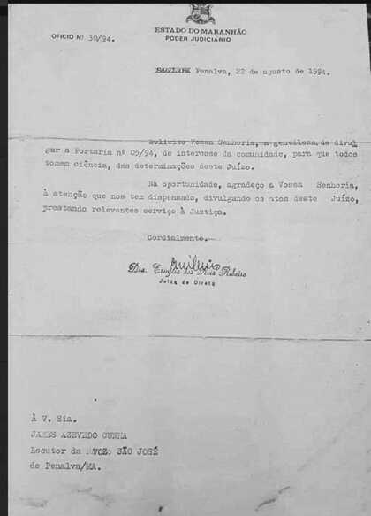
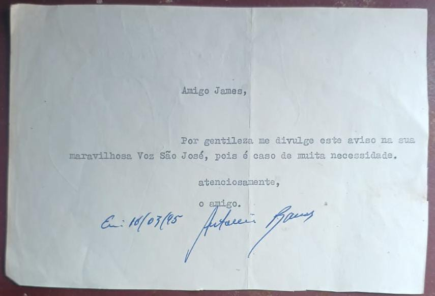
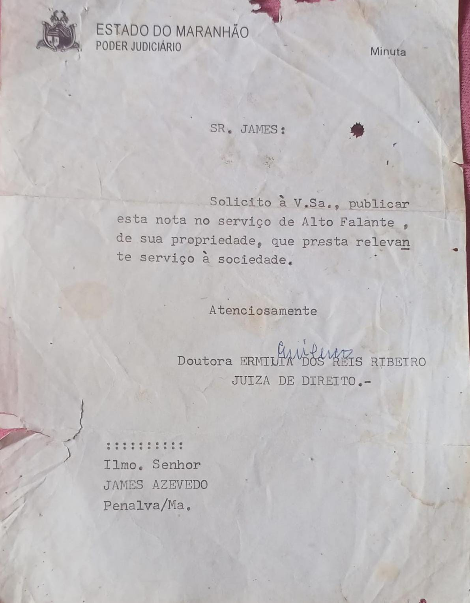
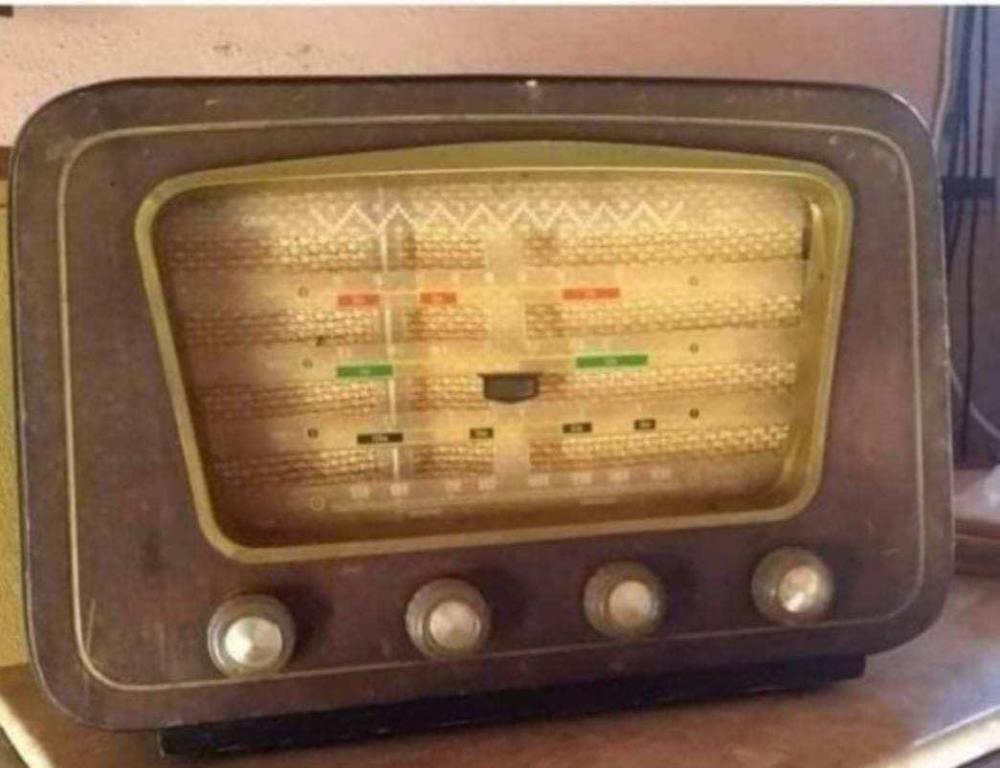

Da Voz São José para o rádio
Quando em Penalva ainda não contávamos com uma estação de rádio e nem com carros de som permanentes, nos anos 9O, iniciei o serviço de alto-falante, cujo nome fiz uma homenagem ao padroeiro da cidade: "Voz São José". Eram 4 projetores potentes. E o estúdio ficava na casa dos meus pais na rua Dr.Djalma Marques, 417, com entretenimento, muita música, show de calouros, entrevistas e informações. Era tudo gratuito, feito com carinho. E desse tempo como registro, ficaram somente a história oral, avisos, feitos ainda em máquina de datilografia. Um deles foi o pedido do amigo secretário de administração na gestão da prefeita Derze Barros, o Antonio Barros, para que divulgasse notas de interesse local; outro, porém, foi um ofício de nr. 3O/94 assinado pela então Juíza da nossa comarca, a Exma. Dra.Ermília dos Reis Ribeiro, em 22.08.1994, quando a mesma solicitou que eu divulgasse avisos importantes para a população.
  Com o passar do tempo se aproximava a eleição, o penalvense Stélio Gama foi candidato a vereador, pediu que eu fizesse uma entrevista com ele, para esclarecer dúvidas aos ouvintes que estavam prestes a se aposentarem por contribuição, tempo de serviço, sindicato, etc, já que, até então, ele era funcionário do INSS licenciado. Pois bem, a entrevista segue, bom papo, lá chegou um oficial de Justiça, a mando do juiz Dr.Gonçalo, dizendo que, aquela entrevista, subtendia à uma propaganda política, embora não tivéssemos fugido uma só pergunta ou resposta que não fosse sobre o que fora anunciado. Mas, em obediência ao "Juiz", encerramos a entrevista. Deu vontade de parar às nossas atividades, mas depois soube que foi uma denúncia anônima quando tive que me apresentar ao gabinete do Juiz Eleitoral. O fórum nesse tempo, funcionava onde é o prédio da câmara de vereadores.
Entretanto, Nos anos 96, chega a rádio Tarumã-FM, tendo como diretor Carlos Alberto de Sá Barros (Cabé), a convite do Dr.Lourival Gama para ser o diretor. Ele logo foi me visitar durante a programação, só lembro que ele colocava a mão em um dos lados dos ouvidos e pude perceber uma certa inquietação, enquanto eu não baixasse o volume do som do amplificador, mas disse que precisava falar comigo que eu o procurasse em sua residência.Fui ao local combinado e recebi o convite, para ser locutor de uma rádio que seria instalada em Penalva, mas eu teria que fazer um teste por meio da leitura de uma matéria do Jornal " O Estado do MA". E então fiz a leitura gravada para ser aprovado ou não, pois, não tive dificuldades, já que sabia usar o microfone, manter a respiração controlada, impostação de voz, palavras bem pronunciadas, certo que passei no teste. O texto, continha algumas palavras que precisavam de leves pausas para a boa compreensão do texto e não serem lidas de um só fôlego. Cabé era rigoroso, mania de perfeccionista e, não foi por acaso, que foi antes diretor da Rádio Educadora de São Luís-MA e, também, Rádio Universidade. Todavia, com os preparativos para a inauguração da emissora, tive que me afastar do Serviço de Alto-Falante.
A Rádio Tarumã-FM, inaugurou em 28.09.1996, na Ponta do Abelin, no Bairro São Pedro, nas proximidades das margens do Lago Cajari. Logo bem cedo, com uma espécie de mesa-redonda apresentada por Cabé, com membros do Clube de Mães Nossa Senhora da Conceição, Associação essa, atrelada à emissora, com Dona Clara Arouche, Maria Joaquina, Dr.Carlos Gama, Geane Gama e Padre Cordeiro. Nessa coletiva, foram discutidas políticas públicas que pudessem melhorar a nossa cidade em diversos setores da sociedade. O Pe. Cordeiro, como sempre, se sobressaiu na oratória e com boas ideias. Nada foi gravado, até porque não tínhamos recursos para isso. Os primeiros locutores fundadores, foram: James Cunha, Júlia Grabriela, Francisco Silva de Oliveira, Nilde Nabate e Marly Bahia. No dia seguinte, começava a programação diária. Eu apresentando o primeiro programa da Rádio, com o "Acorda Penalva" das 5h às 8h da manhã. E à tarde apresentava o "Canto Brasileiro". Depois de um certo tempo, apresentei somente o Show da Manhã, sempre com excelente aceitação popular. Ainda tínhamos a programação das Igrejas. O Dr.Raimundo Balby foi convidado para apresentar "A música e os Músicos do Maranhão", com muito sucesso, tendo na sonoplastia o Adelino Silva. Hoje, portanto, estamos diante da tecnologia visual (som e vídeo), livros físicos dividindo espaços com as publicações e leituras digitais, e-books, tudo isso e muito mais viralizando com muita rapidez e, assim segue esse paradigma que não para mais, com seus benefícios e malefícios em nosso dia a dia, cabendo a cada um filtrar seus conteúdos com sabedoria aproveitando o que há de bom e deletar o prejudicial. O amanhã não espera, passa!